Testers can set the BlackHole server address in the GFriend UI -> Menu -> Tool -> Option
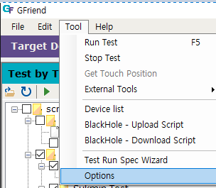
In the option form, tester can set the BlackHole server address as below
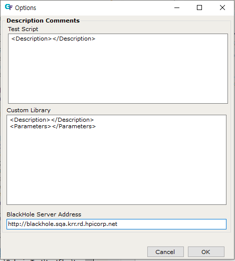
If testers try to uplaod or download script, login window will be displayed.
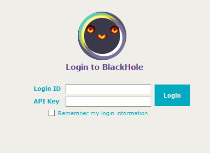
Tester can login with their testrail id (email address) and API Key to the BlackHole. Login session will be maintained until closing the GFriend. If tester check 'Remember my login information' checkbox, GFriend will save email and encrypted API Key.
Before uploading script
In the TestRail, GFriend script will be managed as test section. And test cases in the script file will be managed as test case in the section. BlackHole requires descriptions for all test cases to upload. This description will be updated to testrail's test case step column. To set the decsription of test case, tester write description with /// (three slash and space) and <Description> tag in just above the test case name.
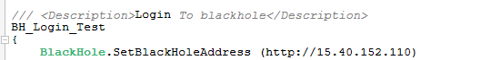
When tester type /// (three slash) in blank line, description template will automatically inserted. If tester want to change the template, tester can set the their own template in Options (Menu - Tool - Options.) See below example (It also support multiple line.)
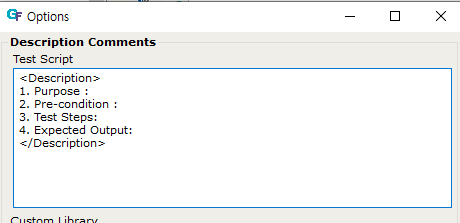 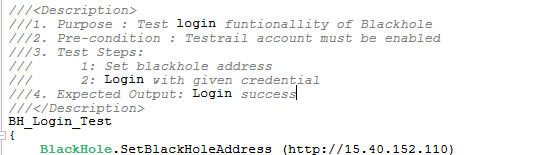
Upload button
Tester can start upload by clicking upload button in side panel(or Menu - Tool - BlackHole - Upload Script.) Then GFriend will upload currently selected script file.
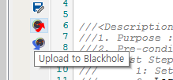
Upload Window
After login, tester can see the upload window with all information for uploading script.
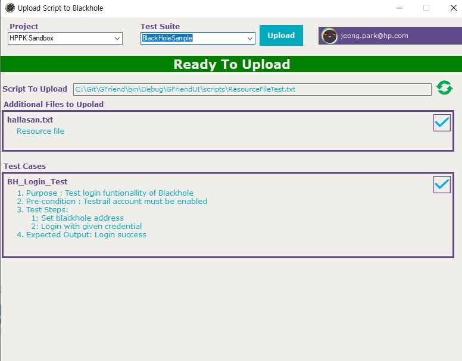
Project and Test Suite
Tester have to select TestRail project and test suite where GFriend script will be uploaded. List of Test Suite will be changed based on selected project.
Script to Upload
Tester can check script file path
Additional Files to Uplaod
GFriend automatically upload all files (custom library(.gflib), variable file(.gfvar) and resource files) that used in the script. List of files which will be uploaded with script will be displayed.
Test Cases
All list of test cases will be displayed. If test case is ready to upload (have description), marker at top right will be blue check mark. Else if test case do not have description, marker will be read x mark.
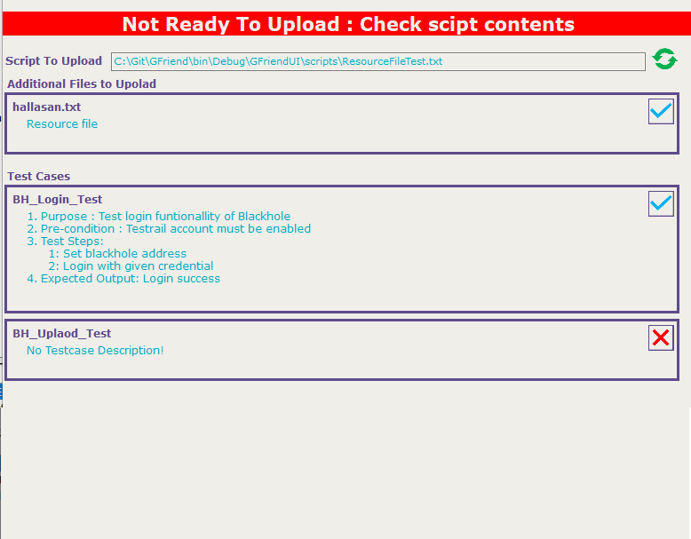
If tester double-clicks the test case in the list, cursor will be moved to GFriend editor window with position of the selected test case. After fix the issue (insert description), tester can check status with refresh button () which is just next to Script to Uplaod.
Uplaod Button
If script file is ready to upload, tester can upload the script by clicking Upload button.
Change description
Tester should input change description of current upload to maintain change history.
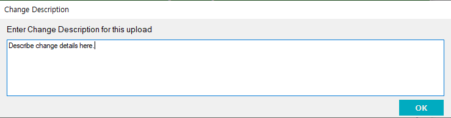
This change description will be placed in the very top of the script file with comment format.
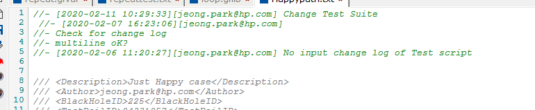
After Upload
After success upload, tester can see the message box with success message.
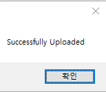
Also script editor will be refrehed with more test case meta data from the BlackHole system. This will contains Autor, BlackHoleID and TestRailID as below example.
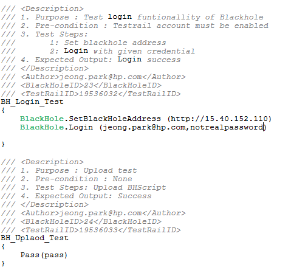
Download button
Tester can start download by clicking download button in side panel(or Menu - Tool - BlackHole - Download Script.) Then GFriend will BlackHole server trees next to local file tree.
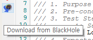
1.BlackHole Server Tree
After login, tester can see BlackHole server tree as below.

1. Close icon
Server tree pane will be closed when tester clicks the close button (read X button at top right)
1. Tree Hierarchy
Tester can see the list of TestRail project in the 1st level of the tree. If tester double-clicks the project, it will retrieve sub test suite of selected project.

When tester double-clicks the test suite, it will retrieve list of test sections (GFriend script). (NOTE. Only test sections which are managed under the BlackHole will be displayed.)

Test section also have children which are test cases.
1. Download Script(s)
When tester clicks download button (), GFriend will download script to local PC. It will download all scripts (and file used in the scripts) under selected tree item. If tester selects project and clicks the download button, it will download all retrieved test sections under project (Same as test suite.)
1. Download locations
GFriend will download selected script with hierachy of the BlackHole. Script will be downloaded to [Local Script Root]\\[Project Name]\\[Test Suite Name] as below example.

Execute button
Tester can exeucte BlackHole test locally. To trigger the test, click the Execute BH Test icon in side panel.
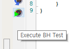
Trigger Test
Like BlackHole exeuction in the Web page, tester can trigger test with TestRail Test Run ID or Test Suite ID as below image. Tester can select with radio button whether trigger with Run ID of Suite ID.
Also tool automatically identify the trigger method with format of ID. If id starts with 'R' (ex. R85156) tool identify that it is a Run ID. Likely, id starts with 'S', tool identify that it is a Suite ID.
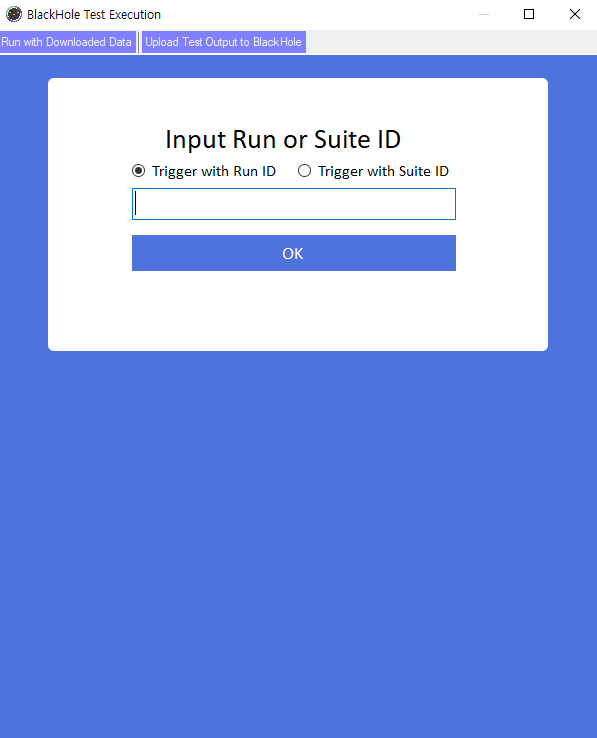
Input Variables
Tester need to input variables just same as in the Web page. (If test need DUT(s) and tester already registerd DUT(s) in their GFriend, DUT information will be automatically filled out.)
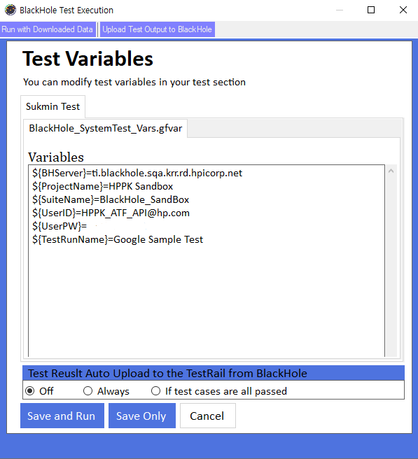
Tester also can select Test Result Auto upload to the TestRail from the BlackHole options:
. Off : Do not upload result. Tester can upload/discard result in portal.
. Always : BlackHole will automatically upload test results to the TestRail.
. If test cases are all passed : BlackHole will automatically upload test results to the TestRail just if all test cases are passed.
If tester triggers test with Suite ID, tool requires test run creation configurations. Tester shall fill out the Test Run Name and select Test Run creation Type :
. Made on Test Run Standalone : Tester can create run without Test Plan. Also test run can be created under Milestone if tester specify the Milestone ID.
. Made on Test Run withtin Test Plan : Tester can create run within the Test Plan. Test Plan ID shall be filled out.
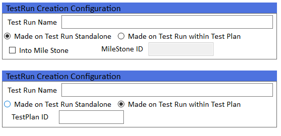
Execute test in local and upload result to the BlackHole in one step
After clicking Save and Run button, GFriend will download test script from the BlackHole and store them under [ScriptRoot]\BlackHoleExecution[Black Hole ID] folder. After download, it will start test with downloaded script(s). The progress will displays in output as below.
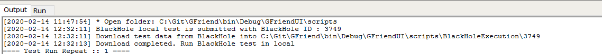
While executing test in local,the BlackHole will displays its status as 'Local Running'. GFriend will open current executed script file on the editor while execution. After all executions are finished, GFriend will upload test result to the BlackHole and its progress also will displays in output as below.
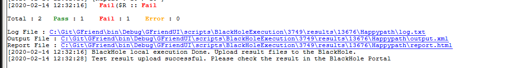
After that, tester can recive notification via email just like other test.
Save test script Only
If tester clcik the Save Only button on Variable Input window, GFriend will download test script from the BlackHole and store them under [ScriptRoot]\BlackHoleExecution[Black Hole ID] folder. Also all information of tests are saved in BHTestPlan.json file in that folder so tester can execute test with BHTestPlan.json file later.
Run with Downloaded Data
If tester click Run with Downloaded Data on the top of the window, tester can execute test with downloaded data.
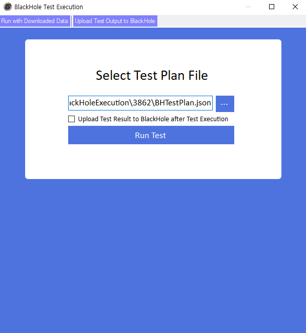
By click browse button (...) test can select BHTestPlan.json file to execute test. Checkbox belows indicate to upload test output to the BlackHole after execute. If not checked GFriend will save test output in local and test can upload them later.
Upload Test Output to the BlackHole
If tester click Upload Test Output to BlackHole on the top of the window, tester can upload test output to the BlackHole.
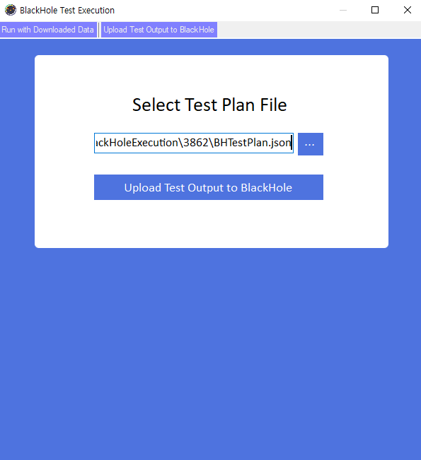
By click browse button (...) test can select BHTestPlan.json file to execute test. Checkbox belows indicate to upload test output to the BlackHole after execute. If not checked GFriend will save test output in local and test can upload them later.
If BlackHole connection environment and test execution environment are seperated, tester can execute BlackHole local execution as below step.
(BH : PC that can connect to the BlackHole, EX : PC that can not connect to the BlackHole and will run the test)